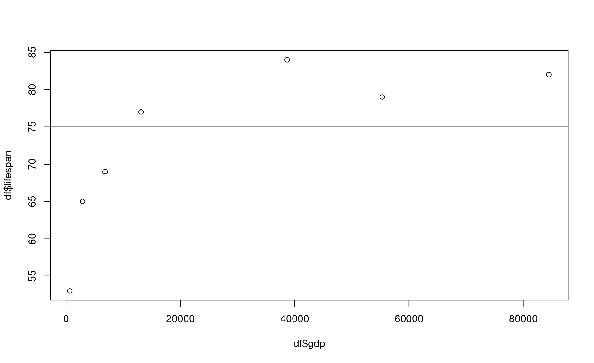
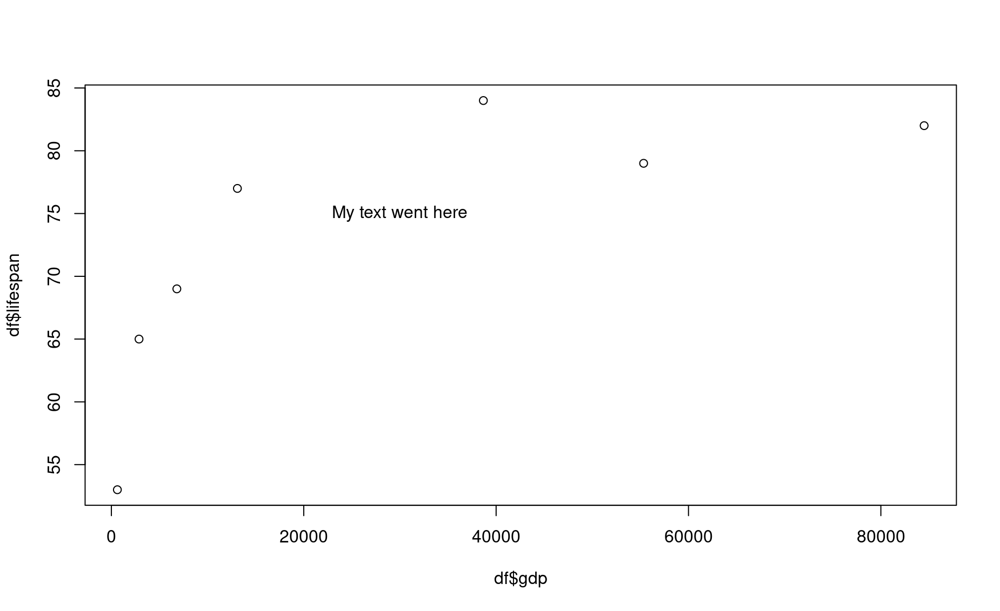
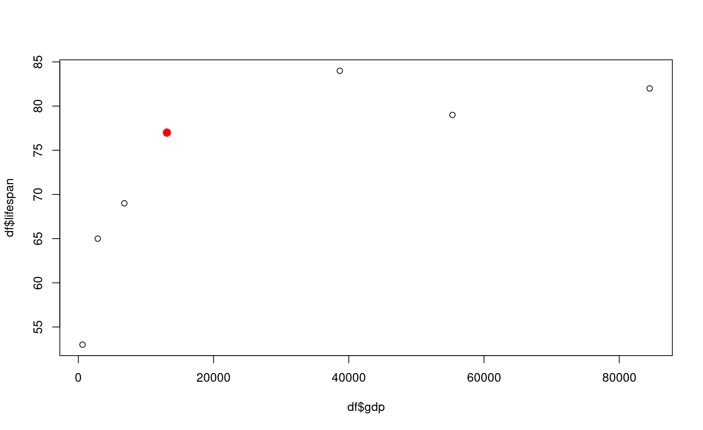

Module 50 Advanced base plots in R
Learning goals
- Advanced tips and tricks for basic plots in
R
This module assumes you have already worked through the module on base plotting.
Make sure you have this dataset from that module ready to go:
country <- c("USA","Tanzania","Japan","Ctr. Africa Rep.","China","Norway","India")
lifespan <- c(79,65,84,53,77,82,69)
gdp <- c(55335,2875,38674,623,13102,84500,6807)
df <- data.frame(country,lifespan,gdp)The possibilities for data visualization in R are pretty much limitless, and over time you will become fluent in making gorgeous plots. Here are a few common tools that can take your plots to the next level.
Adding lines
In some cases it is useful to add reference lines to your plot. For example, what if we wanted to be able to quickly see which countries had life expectancies below 75 years?
You can add a line at lifespan = 75 using the function abline().

In this command, the h input means “place a horizontal line at this y value.”.
Similarly, you can use v to specify vertical lines at certain x values.

Note here that another input, lty, was used to change the type of line printed. (Refer to ?abline() for more details).

Highlighting certain data points
It can be helpful to highlight a certain data point (or group of data points) using a different dot size, format, or color.
To highlight a single data point, here is one approach you can take: first, plot all points, then re-plot the point of interest using the points() function:

In this example, we re-plotted the data for the fifth row in the dataframe (in this case, China).
To highlight a group of data points, try this approach:
First, create a vector that will contain the color for each data point.
Second, determine the color for each data point using a logical test.
Third, use your vector of colors within your
plot()command.
For example, let’s highlight all countries whose life expectancy is greater than 75.
# First
# create a vector of colors the length of vector `lifespan`
cols <- rep("grey",times=length(lifespan))
cols
[1] "grey" "grey" "grey" "grey" "grey" "grey" "grey"
# Second
change_these <- which(lifespan > 75)
change_these # these are the elements that we want to highlight
[1] 1 3 5 6
cols[change_these] <- "red" # change the color for these elements
# Third
plot(lifespan ~ gdp,pch=16,col=cols,log="x")
Building a plot from the ground up
In many applications it can be helpful to have complete control over the way your plot is built. To do so, you can build your plot from the very bottom up in multiple steps.
The steps for building up your own plot are as follows:
Stage a blank canvas: A plot begins with a blank canvas that covers a certain range of values for
xandy. To stage a blank canvas, add this parameters to yourplot()function:type="n", axes=FALSE, ann=FALSE, xlim=c(__, __), ylim=c(__, __)". These commands tellRto plot a blank space, not to print axes, not to print annotations like x- or y-axis labels, and to limit your canvas to a certain coordinate range. Be sure to add numbers to thexlim()andylim()commands.Add your axes, if you want, using the function
axis(). The commandaxis(1)prints the x-axis, andaxis(2)prints the y-axis. This function allows you to define where tick marks occur and other details (see?axis).Add axis titles using the function
title().Add reference lines, if you want, using
abline(). Do this before adding data, since it is usually nice for data points to be superimposed on top of your reference lines.Add your data using either
points()orlines().Add text labels, if you want, using
text().
Here is an example of this process:
# 1. Stage a blank canvas
par(mar=c(4.5,4.5,1,1))
plot(1,type="n",axes=FALSE,ann=FALSE,xlim=c(0,100000),ylim=c(40,100))
# 2. Add axes
axis(1,at=c(0,20000,40000,60000,80000,100000),
labels=c("$0", "$20","$40","$60","$80","$100"))
axis(2,at=seq(40,100,by=10),las=2)
# 3. Add axis titles
title(xlab="Gross Domestic Product (GDP, in thousands) per Capita ",cex.lab=.9)
title(ylab="Average Life Expectancy",cex.lab=.9)
# 4. Add reference lines
abline(h=70,v=50000,lty=3,col="grey")
# 5. Add data
points(x=gdp,y=lifespan,pch=16,col="firebrick")
# 6. Add text
text(x=gdp[6],y=lifespan[6],labels="Norway",pos=3)Exercises
Public health & life expectancy
1. Produce a plot of life expectancy as a function of GDP per capita. Then add a line to your plot that indicates which countries have per-capita GDPs that fall below (or above) the average per-capita GDP for the whole dataset. Make your line dashed and color it red.
2. Produce a plot of life expectancy as a function of GDP per capita, then label each point by country. Make the labels small and place them to the right of their associated dot (Hint: use ?text for help).
3. Produce a plot of life expectancy as a function of GDP per capita, in which all countries with GDPs below $10,000 have larger dots of a different color.